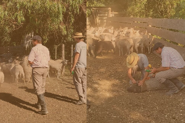

Acerca de nosotros
Criamos corderos con pasión, tradición y respeto por la naturaleza.
En Las Delicias, nuestra familia lleva años dedicándose al campo, criamos nuestros corderos de manera natural, libres y alimentados a pasto en el campo.
Sin apuros, sin agregados artificiales, respetando su ciclo natural.
Beneficios:
Criados con bienestar y sustentabilidad.
Sin hormonas ni antibióticos, sólo calidad premium.
Directo del productor al consumidor.
Razas Texel y Dorper, reconocidas por su terneza y calidad.